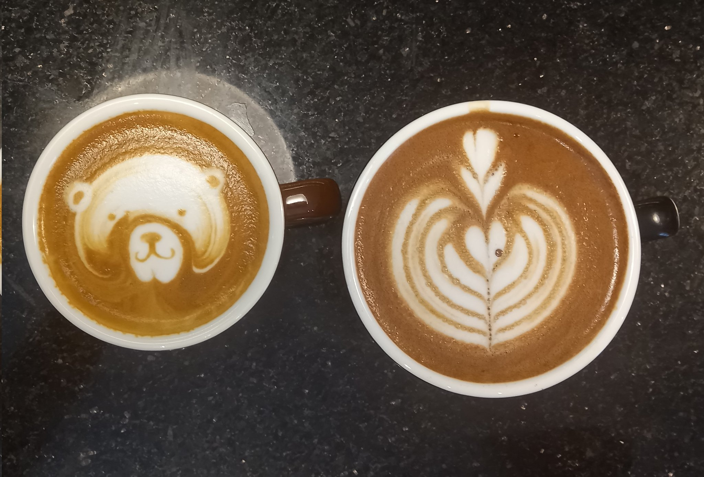
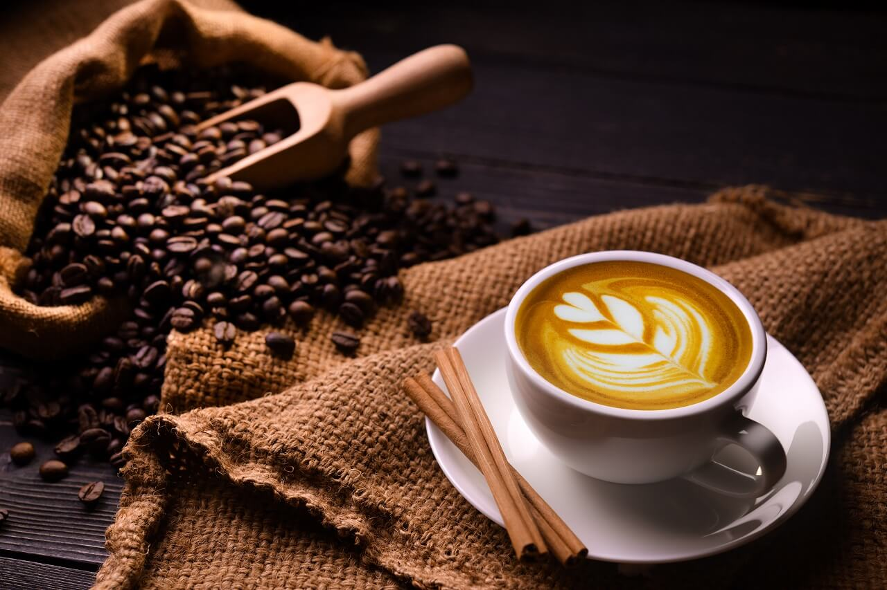
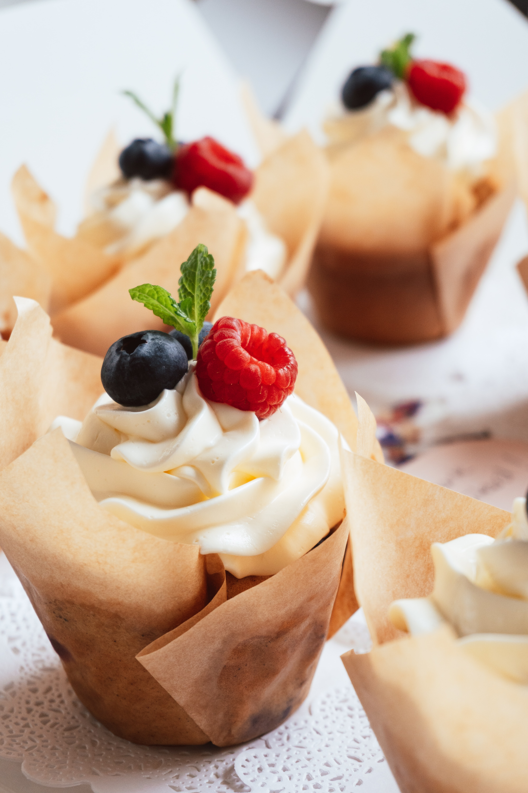
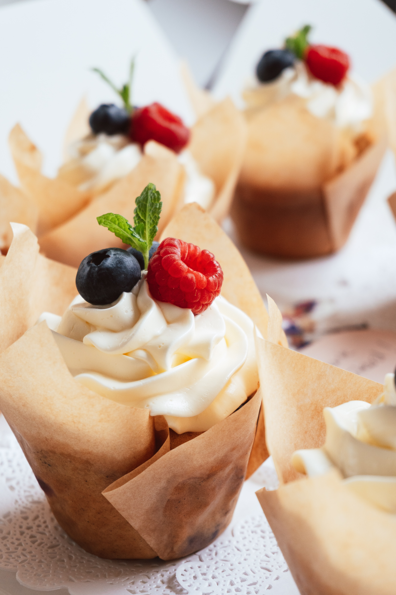

Desayuno
Menu
Comience su día con una de nuestras deliciosas opciones de desayuno. Ofrecemos una amplia variedad de opciones para satisfacer todos los gustos, desde desayuno tradicional hasta waffles con fresas y mermelada. Todos nuestros ingredientes son frescos y de alta calidad.
Pide el menu



 
